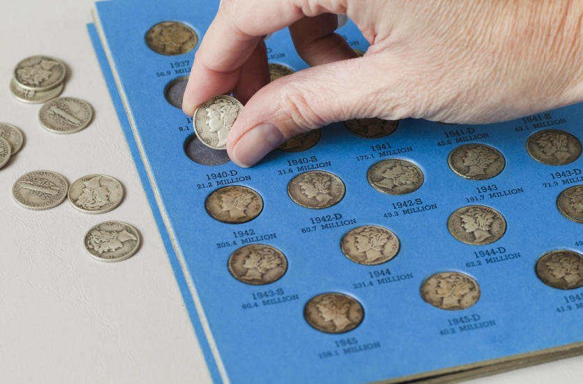
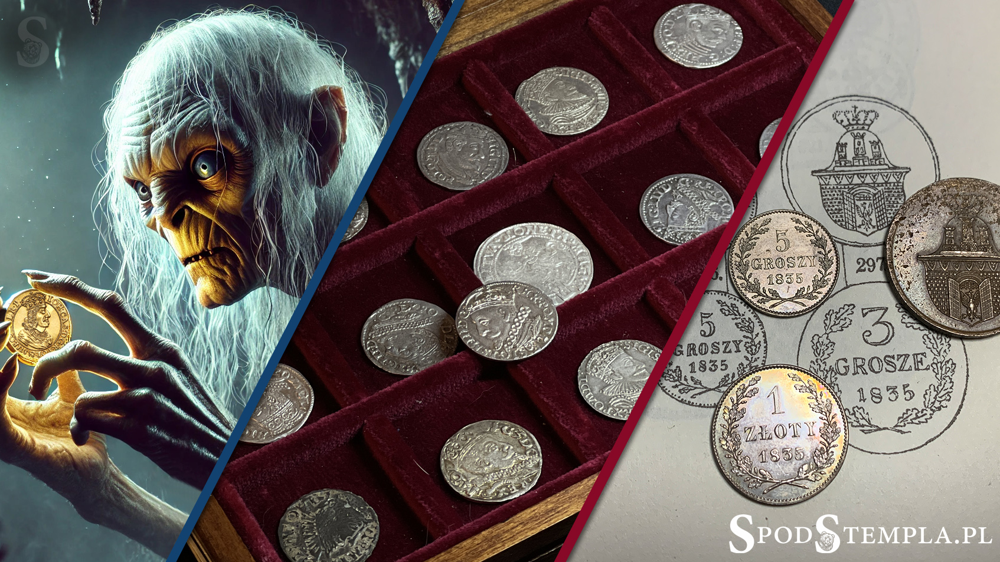

Moim głównym zainteresowaniem jest kolekcjonowanie monet. Interesuje się tym od dzieciństwa kiedy w ogrodzie mojeje babci monetę z czasów Mocarstwa Rosyjskiego . Po tym i do teraz zbieram różne monety z różnych czasów i panstw. Z każdego państwa w którym byłem przynosze różne minety.
Największym 'perłem' mojeje kplekcji to moneta 1735 roku z czasów Mocarstwa Rosyjskiego o nominale 1 rubel , tą monetę znalazłe, w moim domu , na Ukrainie kiedy z ijcem waliiliśmy stajnię , i w podłodze był dzban z monetą którą prawdopodobnie zostałił na 'carną godzine' ktoś z moich przodkuw. W mojeje kolekcji jest dużo różnych monet np złoe , euro , gruwne (waluta Ukraińska) , funtów , juani i innych
Uważam , że jest to bardzo ciekawe hobbi ponieważ wielie ldzie zbieraja drobne rzeczy , a monety jescze sa cenne , a także powooduje to podróżowanie w różne panstwa i kontakt z wielu ludzmi Wiele ludzi mogą i chcą zbierac swoją kolekcje , i monety są dobrym początkem dla takiego hobby ponieważ są oni wszendzie i psą różne a takżę aka kolekcja za 40-50 lat będzie mieć wielką cenność materislną. Bo chociaż 1 złoty i wydaje się mało lecz 100 zzzzzzzzzzzzzzzłoty już dużo. Uważm że wszyscy mogą to zacząć. 
Więcej dowiesz się na https://pl.wikipedia.org/wiki/Moneta